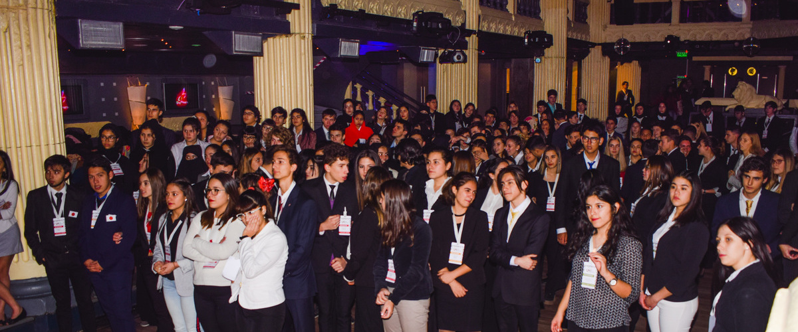

Una simulación o representación del Sistema de Naciones Unidas en el que participan alumnos de escuelas secundarias representando a los delegados de Estados Miembros de la ONU que intervienen en debates y negociaciones en los que tratan temas que corresponden a los programas de trabajo de los diferentes órganos y comisiones de las Naciones Unidas.